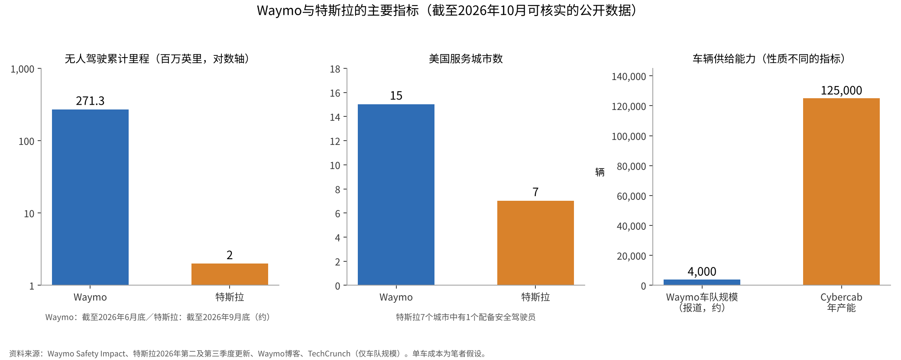
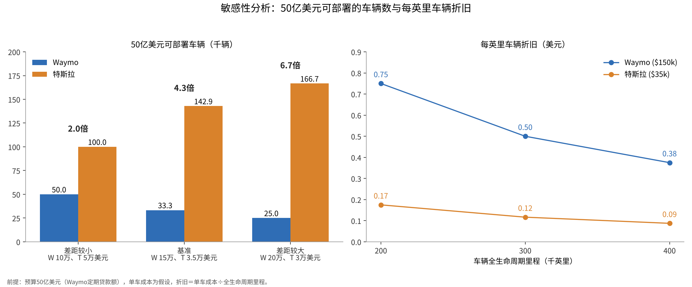

Waymo与特斯拉：决定自动驾驶主导权的是安全记录还是量产规模？
Waymo与特斯拉，决定自动驾驶主导权的究竟是“无人驾驶的里程”，还是“能够制造的车辆数量”？本文仅在公开数据可以核实的范围内讨论这一问题。
两家公司追求的都是“自动驾驶出租车”，但在传感器选择、对地图的依赖程度以及车辆来源方面差异显著。
本文通过一手资料中的数据、前提明确的简单估算及其敏感性分析，梳理哪条路径在何种条件下更具优势。

问题与背景
自动驾驶的等级通常依据国际通行的SAE J3016定义来讨论[1]。SAE 4级是指在规定的运行条件范围内，系统承担全部驾驶任务，且不要求人类响应接管请求的阶段。与之相对，2级辅助加减速与转向，但需要人类始终监控[1]。特斯拉的“FSD（Supervised）”正如其名称所示，是以监控为前提的2级驾驶辅助。
Waymo的方案是叠加多种传感器。激光雷达（LiDAR）是一种向周围发射激光、根据反射返回的时间以三维方式测量与物体距离的传感器。第六代Waymo Driver配备13个摄像头、4个激光雷达和6个毫米波雷达，并称成本较上一代大幅下降[2]。此外，Waymo一直采用高精地图（HD地图），即以厘米级精度记录车道和标志位置的地图，并按运营区域逐一制作。
特斯拉的方案以摄像头图像为主要输入，通过端到端学习构建驾驶行为。端到端是指不再用各自独立的规则组合感知、决策与控制，而是让单一神经网络学习从输入到驾驶操作的全过程。其优势被认为在于传感器成本低，且可以直接使用自有工厂大量生产的车辆。
从公开的规模数据看，Alphabet于2026年4月表示，Waymo每周的完全自动驾驶乘车次数已超过50万次[3]。Waymo于2026年9月在美国第15个城市开通服务，并于10月宣布50亿美元（约335.86亿元人民币）的定期贷款[4]。特斯拉在2026年第二季度资料中列出了在美国7个都市圈运营的自动驾驶出租车，其中旧金山湾区配有安全驾驶员[5]。第三季度资料显示，Cybercab已开始生产，得克萨斯工厂的年产能超过12.5万辆[6]。
数据与方法
所用数据及处理方式如下。Waymo的无人驾驶里程采用其安全数据公开页面中截至2026年6月底的“仅乘客（无驾驶员）”累计2.713亿英里[7]。特斯拉的无人驾驶里程采用第三季度资料中“自动驾驶出租车无监督累计里程接近200万英里”的表述[6]。里程之比为271.3÷2.0，约为136倍。
安全性方面，参考了Waymo的公开数据与同行评审论文。Waymo页面显示，与人类驾驶相比，重伤及以上事故减少95%，安全气囊弹出事故与致伤事故各减少82%[7]。一篇于2025年被学术期刊接收的论文报告，在5670万英里时，路口车辆之间的致伤事故减少96%[8]。关于特斯拉，本次未能核实将其自动驾驶出租车事故率与人类驾驶进行比较的公开数据。
估算考察的是：以与Waymo贷款额相同的50亿美元预算，各公司能够部署多少辆车。两家公司均未公布单车成本，因此以下为笔者的假设。基准情形中，含传感器的Waymo车辆设为每辆15万美元，Cybercab设为每辆3.5万美元。公式如下：
部署车辆数＝预算÷单车成本
每英里车辆折旧＝单车成本÷全生命周期里程
年乘车次数＝部署车辆数×单车每周乘车次数×52
单车每周乘车次数以每周50万次[3]除以报道中约4000辆的车队规模[13]，约为125次。由于车队规模无法在一手资料中核实，该数值仅供参考。
结果
基准情形下，50亿美元可使Waymo部署约33,333辆车，特斯拉约142,857辆，差距约4.3倍。若全生命周期里程为30万英里，每英里车辆折旧Waymo为0.50美元，特斯拉约为0.12美元。若单车每周运营125次，年乘车次数Waymo约为2.1667亿次，特斯拉约为9.2857亿次。

| 指标 | Waymo | 特斯拉 | 资料来源 |
|---|---|---|---|
| 无人驾驶累计里程 | 2.713亿英里（2026年6月底） | 约200万英里（2026年9月底） | [7][6] |
| 美国服务城市数 | 15个城市 | 7个都市圈（其中1个配有安全驾驶员） | [4][5] |
| 每周乘车次数 | 超过50万次（2026年4月） | 未公布 | [3] |
| 车辆供给 | 车队约4000辆（报道） | Cybercab年产能超过12.5万辆 | [13][6] |
| 50亿美元可部署车辆（基准情形） | 约33,333辆 | 约142,857辆 | 笔者估算 |
由此可见，两项指标指向相反方向。在实绩积累上，Waymo领先两个数量级以上；在量产与单车成本上，特斯拉的结构更为有利。
敏感性分析
将前提沿三个方向调整，检验结论的变动幅度。
第一是单车成本差距。差距较小情形（Waymo 10万美元，特斯拉5万美元）下车辆数差距为2.0倍，基准情形为4.3倍，差距较大情形（Waymo 20万美元，特斯拉3万美元）为6.7倍。
第二是全生命周期里程。20万英里时，Waymo为0.75美元，特斯拉为0.175美元；40万英里时，Waymo为0.375美元，特斯拉为0.0875美元。无论里程如何，单车成本之比都原样保留。
第三是运营强度。将单车每周乘车次数设为75次、125次和175次，50亿美元车辆带来的年乘车次数，Waymo分别为1.3亿次、2.1667亿次和3.0333亿次，特斯拉分别为5.5714亿次、9.2857亿次和13亿次。
| 调整的前提 | 低情形 | 基准情形 | 高情形 |
|---|---|---|---|
| 单车成本组合（W/T） | 10万/5万美元：2.0倍 | 15万/3.5万美元：4.3倍 | 20万/3万美元：6.7倍 |
| 全生命周期里程 | 20万英里：W 0.75/T 0.175美元 | 30万英里：W 0.50/T 0.117美元 | 40万英里：W 0.375/T 0.0875美元 |
| 每周运营（年乘车次数） | 75次：W 1.30亿/T 5.57亿次 | 125次：W 2.17亿/T 9.29亿次 | 175次：W 3.03亿/T 13.0亿次 |

在所有组合中，同等预算下特斯拉可部署的车辆数都在两倍以上。但这仅限于特斯拉车辆在无人监控的情况下实现同等运营强度的情形。

讨论
相反的观点同样有力。安全记录无法用车辆数量替代。Waymo拥有超过2亿英里的无人驾驶里程和经过同行评审的比较研究[7][8]。特斯拉的无人驾驶里程约为200万英里，要与人类驾驶进行统计比较，距离仍然偏短。即便车辆众多，若得不到监管机构和乘客的信任，也难以转化为实际运营。此外，Waymo也在通过新车型降低单车成本[2]，成本差距可能随时间缩小。
数据本身也有局限。美国国家公路交通安全管理局（NHTSA）的事故报告制度（Standing General Order）要求报告在自动驾驶系统或2级系统使用期间发生的特定事故，但明确指出事故数量未按行驶里程进行调整，在企业之间比较时需谨慎[9]。在加利福尼亚州公用事业委员会（CPUC）的季度报告中，2026年列出的持有无人驾驶商业运营许可的企业仅有Waymo[10]。该州还设有脱离（disengagement）报告制度，即自动驾驶模式被解除、由人接管驾驶的事件[11]，但这些数据针对测试车辆，并不直接反映业务成败。特斯拉自身也说明，其安全报告中使用的人类平均值包含估算[12]。
估算的不确定性很大。单车成本、全生命周期里程、远程监控的人工成本、保险以及充电和清洁费用均未公布。车队规模也是报道数据。
能够改变结论的证据是清楚的。如果特斯拉在没有安全驾驶员和监控的情况下，在多个城市积累数千万英里规模的无人驾驶里程，并公布按里程调整后的事故率，其量产优势将使其更接近主导地位。反之，如果Waymo将单车成本降至可以公开的水平，并稳定展示每周约100万次的乘车规模，其实绩上的领先或许能够弥补规模差距。
结论
按目前的公开数据，Waymo在无人驾驶实绩、城市数量和许可方面处于领先。另一方面，在同等预算可部署的车辆数上，即便调整前提，特斯拉仍以2至6.7倍的幅度领先。决定主导权的，似乎是两种速度的竞争：特斯拉能否把量产优势转化为无人运营的安全记录，以及Waymo能否在保持实绩的同时降低单车成本。
我的看法
我认为取得主导地位的会是特斯拉。理由是它能够自己大量制造车辆。电动汽车已近在眼前。剩下的是放松监管以及与既得利益的斗争，我认为这是最大、也是最艰难的部分。
我还没有乘坐过自动驾驶出租车，也没有体验过FSD，希望能尽快试一试。
我持有两家公司的股票：Alphabet 350股，特斯拉400股。在此基础上，我希望特斯拉获胜。
资料来源
- SAE International（经由ANSI Blog），“SAE Levels of Driving Automation: J3016-2021”，2021年。 https://blog.ansi.org/sae-levels-driving-automation-j-3016-2021/
- Waymo，“Meet the 6th-generation Waymo Driver”，2024年8月19日。 https://waymo.com/blog/2024/08/meet-the-6th-generation-waymo-driver/
- Alphabet，“Alphabet Announces First Quarter 2026 Results”，2026年4月29日。 https://s206.q4cdn.com/479360582/files/doc_financials/2026/q1/2026q1-alphabet-earnings-release.pdf
- Waymo，“Waymo closes $5 billion debt financing”，2026年10月8日。 https://waymo.com/blog/2026/10/waymo-closes-5-billion-debt-financing/
- Tesla, Inc.，“Q2 2026 Update”（Form 8-K Exhibit 99.1），2026年7月22日。 https://www.sec.gov/Archives/edgar/data/0001318605/000162828026049213/exhibit991.htm
- Tesla, Inc.，“Q3 2026 Update”（Form 8-K Exhibit 99.1），2026年10月21日。 https://www.sec.gov/Archives/edgar/data/1318605/000162828026066738/exhibit9914.htm
- Waymo，“Waymo Safety Impact”（截至2026年6月的数据，2026年10月28日访问）。 https://waymo.com/safety/impact/
- Kusano, K. D., Scanlon, J. M., Chen, Y.-H., McMurry, T. L., Gode, T., Victor, T.，“Comparison of Waymo Rider-Only Crash Rates by Crash Type to Human Benchmarks at 56.7 Million Miles”，Traffic Injury Prevention（2025年接收），arXiv:2505.01515，2025年5月2日。 https://arxiv.org/abs/2505.01515
- 美国国家公路交通安全管理局（NHTSA），“Standing General Order on Crash Reporting”（截至2026年9月15日的数据，2026年10月28日访问）。 https://www.nhtsa.gov/laws-regulations/standing-general-order-crash-reporting
- 加利福尼亚州公用事业委员会（CPUC），“AV Program Quarterly Reporting”，2026年8月18日更新。 https://www.cpuc.ca.gov/regulatory-services/licensing/transportation-licensing-and-analysis-branch/autonomous-vehicle-programs/quarterly-reporting
- 加利福尼亚州机动车管理局（DMV），“Disengagement Reports”，2026年10月28日访问。 https://www.dmv.ca.gov/portal/vehicle-industry-services/autonomous-vehicles/disengagement-reports/
- Tesla, Inc.，“Vehicle Safety Report”，2026年10月28日访问。 https://www.tesla.com/VehicleSafetyReport
- TechCrunch，“Waymo is scaling fast. Here's what the fleet data shows”，2026年9月24日（新闻报道，补充资料）。 https://techcrunch.com/2026/09/24/waymo-is-scaling-fast-heres-what-the-fleet-data-shows/
照片：Heber Davis、Jan Valečka（Unsplash）。图表由YUKI CAPITAL制作
每天的数字和判断，我都记录在X上。